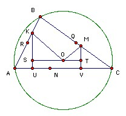

N is any point on AC is the longest side of the triangle ABC, such that the perpendicular bisector of AN meets the side AB at K and the perpendicular bisector of NC meets the side BC at M. Prove that BKOM is cyclic, where O is the circumcenter of ABC.
Solution

Let the midpoints of BC, BA be Q, R respectively. Then OQ is perpendicular to BC and OR is perpendicular to AB, so OQBR is cyclic. Hence ∠B + ∠QOR = 180o. So it is sufficient to show that ∠MOQ = ∠KOR, because then ∠MOK = ∠QOR.
Let the line through O parallel to BC meet the perpendiculars from K and M to AC at S and T respectively. Then ∠OQM = ∠OTM = 90o, so MQOT is cyclic, so ∠MOQ = ∠MTQ. Similarly, ∠KOR = ∠KSR. But QR and ST are both half the length of AC and parallel to it, so QRST is a parallelogram. Hence ∠MTQ = ∠KSR. Hence ∠MOQ = ∠KOR as required.
Thanks to Bekjan Jumabaev

© John Scholes
jscholes@kalva.demon.co.uk
31 December 2003
Last corrected/updated 31 Dec 03